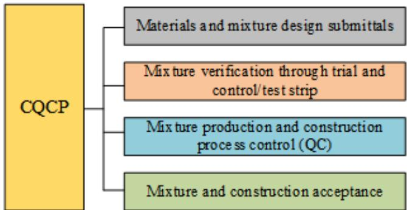
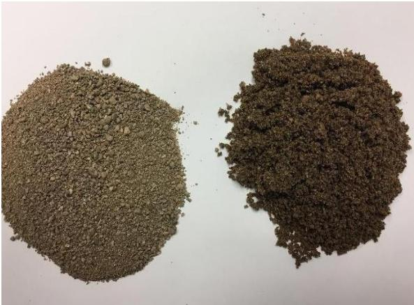
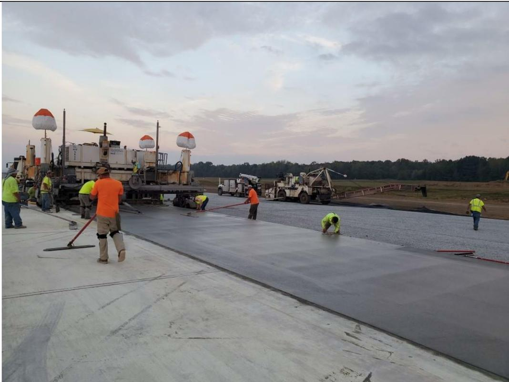
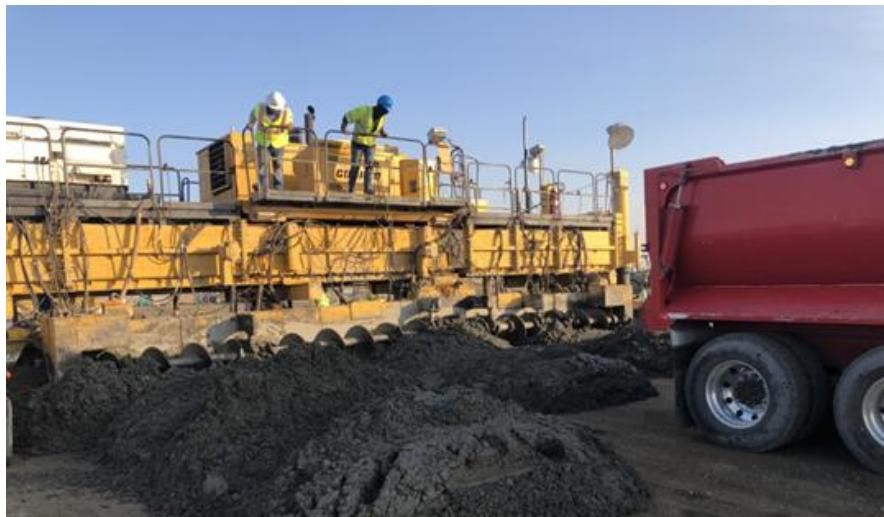
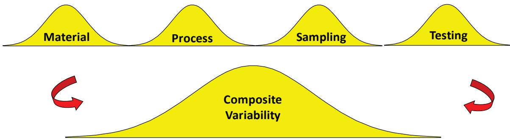
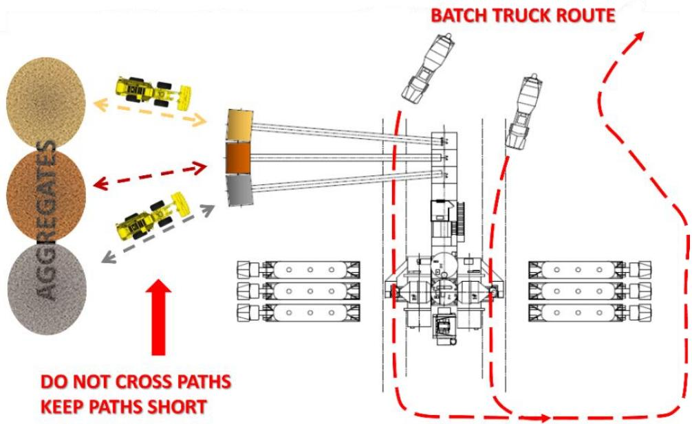

Airport Concrete Pavement Construction Guidelines
The Airport Concrete Pavement Construction Guidelines are a systematic, enforceable quality‑control/quality‑assurance framework for FAA‑ or DoD‑controlled airport concrete pavements that consolidates agency and contractor responsibilities into a single set of standardized inspection, testing, and corrective‑action procedures[2]. By mandating documented supervision of all material inputs, certified mix‑design verification, qualified personnel and equipment, and explicit pre‑construction, production, curing, and acceptance criteria—including texture, smoothness, ride quality, a minimum forward paver speed of 2.5 ft/min, and a seven‑day flexural strength of 450 psi (FAA) or 550 psi (DoD)—the guidelines ensure pavement is placed only after meeting strict hard‑ and soft‑metric tolerances before it can be opened to traffic[3]. This coordinated approach eliminates fragmented expectations that have historically led to non‑conforming materials, structural failures, and costly rework, thereby protecting safety, durability, and cost‑effectiveness of airport pavements[6].
Sources (8)
Purpose and applicability
The Airport Concrete Pavement Construction Guidelines address the chronic lack of a coordinated, consistent, and enforceable quality‑control/quality‑assurance system for airport concrete pavements. Without such a framework, fragmented expectations and inconsistent QC practices allow non‑conforming materials and construction methods to be placed, creating safety hazards, structural failures, premature deterioration, and costly rework. By establishing a single, systematic framework that aligns agency and contractor responsibilities, standardizes inspection, testing, and corrective actions, and requires verification of texture, smoothness, ride quality, and strength before opening to traffic, the guidelines eliminate the confusion and coordination gaps that have historically jeopardized pavement safety, durability, and cost‑effectiveness. [2][3][6]
The figure below illustrates the four stages of quality control for airport concrete paving that should be included in the Construction Quality Control Plan.

Four stages of QC for airport concrete paving that should be included in the CQCP. [2]The figure displays a hierarchical diagram where a large yellow block labeled “CQCP” branches into four distinct colored boxes representing sequential phases. These phases are identified as Materials and mixture design submittals, Mix ture verification through trial and control/test strip, Mix ture production and construction process control (QC), and Mixture and construction acceptance. This visual breakdown illustrates the systematic framework required for airport concrete pavement construction by defining the specific inspection and testing procedures that must be included in a Contractor Quality Control Plan (CQCP).
[2] — Ch. 1 (pp. 24–33), Ch. 2 (pp. 55–69), Ch. 3 (pp. 92–131), Ch. 5 (pp. 171–249), Ch. 7 (pp. 339–345), App. A (pp. 374–385), App. B (pp. 391–407), App. E (pp. 447–458), App. G (pp. 478–488), App. I (pp. 515–516); [3] — App. A (p. 117), App. C (pp. 122–123), App. D (pp. 135–144); [6] — 1. Quality Assurance Concepts (p. 10), 3. Quality Assurance for Concr… (p. 38), App. D (p. 124)
The Airport Concrete Pavement Construction Guidelines are appropriate when the work falls under FAA or DoD authority and meets the thresholds that trigger the full suite of quality‑assurance requirements. “Airport Concrete Pavement Construction Guidelines should be applied whenever a project involves airport pavement work that falls under FAA P‑501 or DoD UFGS 32‑13‑14.13 specifications, because these standards demand detailed analysis of concrete mix design, joint construction, curing, surface elevation tolerances and other airfield‑specific features.” “The Airport Concrete Pavement Construction Guidelines are appropriate when a project needs a general, starting‑point framework for achieving quality concrete performance—particularly to structure the pre‑bid, pre‑construction and pre‑pour meetings that define key design and construction elements.” Conversely, an alternative method should be used whenever these conditions are not met: if a project is not funded by FAA/AIP or does not fall under FAA design standards, another agency’s specifications (e.g., DoD or local highway standards) apply; projects outside the military tri‑service airfields should follow non‑airport specifications; contracts below $500,000 or without federal funds may employ a less formal QA approach without a mandatory CMP/CQCP; when suppliers cannot meet the required aggregate tolerances, a standard highway construction approach is more appropriate; and if schedule pressures force opening of pavement before the seven‑day cure period or before achieving the prescribed flexural strength (450 psi FAA, 550 psi DoD), a structural evaluation must replace the standard guideline thresholds. “For small maintenance or repair projects with a total volume less than two thousand cubic yards, the FAA does not require use of PWL, so a less‑stringent method may be applied.” Because the guidelines are intentionally broad and not highly detailed, they should be supplemented or replaced with more specific, site‑specific specifications whenever local or state requirements demand additional detail or when the project’s complexity exceeds what an outline can adequately control. [2][6]
The following figure illustrates a conservative timeline for mixture and materials approval in a DoD airport concrete paving project.
 Timeline for mixture and materials approval for DOD airport concrete paving project. [2]
Timeline for mixture and materials approval for DOD airport concrete paving project. [2]
The figure displays a Gantt chart illustrating the sequential testing phases required to approve aggregate materials and concrete mixtures, including freeze-thaw resistance, deleterious content, alkali-silica reaction potential, and strength testing. The timeline indicates that the aggregate testing phase is a major piece of the critical path at startup, potentially taking as much as 7.25 months for DOD approval before concrete mixture design commences.
[2] — Ch. 1 (pp. 31–33), Ch. 2 (p. 69), Ch. 3 (pp. 110–111), Ch. 5 (pp. 212–213), Ch. 7 (pp. 343–345), App. B (pp. 391–393), App. I (p. 516); [6] — App. D (p. 124)
Required inputs
The Airport Concrete Pavement Construction Guidelines require that all aggregates be obtained under direct supervision of the contractor’s quality‑control manager, estimator, and purchasing agent, with full testing and documented approval before inclusion in the mix. The supplier must provide particle‑size gradations that meet defined tolerances for critical stone sizes so the blended aggregate can satisfy the concrete mixture design’s performance and workability criteria, and QA personnel must review all test results to confirm conformance. Fresh concrete must be delivered with a consistent mixing time and sufficient truck capacity to keep the paving machine moving forward, preserving slump and preventing segregation; site planning must account for travel‑time factors such as speed limits, haul‑road conditions, active runway or taxiway crossings, weather, and potential equipment breakdowns because these influence slump loss and the ability to maintain the minimum forward motion specified by FAA and DoD. The mix design must be proven to meet specification performance criteria before full‑scale production, delivering a concrete that extrudes from the paver within the prescribed edge‑slump tolerance and exhibits required plastic and hardened properties—including strength, surface texture, thickness, grade, smoothness, joint face deformation, and proper plan‑joint alignment—with little or no finishing. Additionally, the contractor must consider site‑specific climate and subgrade conditions to ensure the selected mix and construction methods align with FAA/DoD standards and the stricter elevation and smoothness tolerances for runways, taxiways, aprons, and arresting gear areas. [2]
The following figure illustrates examples of washed sand with varying particle sizes to demonstrate the gradation requirements for aggregates.

Comparison of washed sand samples with different particle sizes. [2]The image displays two distinct piles of granular material on a white background, representing the physical variability found in construction aggregates. One pile is lighter and composed of coarser particles, while the other is darker brown and consists of finer sand grains. Aggregate variability usually controls the consistency of concrete mixtures, making quality control essential for airfield paving projects where resupply frequently occurs.
[2] — Ch. 2 (p. 69), Ch. 5 (pp. 247–249), App. B (pp. 392–393), App. E (pp. 447–449)
The airport concrete pavement design and pre‑construction requirements are defined by the FAA Standard Specifications (AC 150/5370‑10H) and, for DoD projects, UFGS 32‑13‑14.13. The governing provisions include Section 50 (Control of Work), Section 60 (Control of Materials), Item C‑100 (Contractor Quality Control Program) and Item P‑501 (Cement Concrete Pavement). Design parameters that must be documented in the contractor’s quality‑control plan cover concrete mix design, slab thickness, subgrade preparation, joint layout, curing method, surface texture and strict surface‑elevation tolerances that reflect runway, taxiway and apron cross‑slopes.
The QC plan must fully describe how subgrade layers will be constructed or prepared to meet the pavement specifications, including support conditions, fine‑grading tolerances, measurable acceptance criteria (action limits, suspension limits and corrective‑action procedures), checklists and visual inspections. Access to all material‑handling areas is required so that sampling, testing and equipment loading can be observed.
Before concrete placement the position of reinforcing steel must be verified by probing behind the paver at 300 ft intervals. Pre‑paving otherwise requires no QC measurements, but the contractor must submit and obtain approval for the concrete mixture design, certify that the quality‑management program (QMP) and Concrete Quality Control (CQC) laboratory personnel hold current certifications, and provide batch‑plant certification together with mixer‑efficiency performance testing.
A control or test strip is required prior to production paving. FAA P‑501 permits a 250‑ft start‑up segment followed by an unrestricted‑length control strip; DoD UFGS limits the test section to 600 ft with at least 400 ft of continuous pavement for acceptance. The strip must meet hard‑metric tolerances such as edge slump tolerance, thickness, grade, smoothness, joint‑face deformation and plan‑joint alignment, and soft‑metric criteria including surface texture and allowable bug holes.
Curing periods are explicit: the surrounding lanes must be cured for at least 7 days and attain a minimum field‑cured concrete flexural strength of 450 psi (FAA) or 550 psi (DoD) before loading by paving machines or construction trucks. Strength is verified with field‑cured flexural beam specimens cast within 1,000 ft of the placement point, prepared in accordance with ASTM C31/C31M and tested per ASTM C78 (or an approved maturity method). Laboratories must be accredited to ASTM C1077 and technicians must label specimens and document sampling locations.
Pre‑construction testing also includes aggregate‑gradation verification and trial mixes. Test results are evaluated using the Percent Within Limits (PWL) method; contractors must achieve at least 90 % PWL for both strength and thickness, keep surface elevation within allowable tolerances, grind high spots smooth, and limit ride‑smoothness to 15 inches per mile on segments longer than 500 ft (profilograph) or meet straightedge tolerances on shorter sections.
Maturity monitoring is required to confirm that slab strength is sufficient before traffic is allowed. The HIPERPAV analysis defines the allowable sawing time window, and coring of the pavement is performed to verify slab thickness as part of the QC program.
Production paving speed is limited to a minimum forward motion of 2.5 ft/min, with typical rates of 3–7 ft/min to control slump loss and segregation. Records of slowdowns or stops must be linked to station locations for later quality‑issue tracking. [2][3][6]
The following figure illustrates how adjusting the edges of the slipform mold helps prevent edge slump during paving.
 Comparison of horizontal and edge-slump-adjusted slipform mold profiles. [2]
Comparison of horizontal and edge-slump-adjusted slipform mold profiles. [2]
The figure illustrates the geometric difference between a standard horizontal slipform mold profile and an adjusted profile designed to compensate for concrete slump at the pavement edges. By adjusting the mold geometry, the extruded concrete pavement achieves vertical edges rather than rounded ones, a critical quality metric tied directly to smoothness and joint face deformation during construction.
[2] — Ch. 1 (p. 31), Ch. 2 (p. 69), Ch. 5 (pp. 212–249), App. B (pp. 392–393), App. E (pp. 447–449), App. G (pp. 478–488), App. I (pp. 515–516); [3] — App. A (p. 117), App. D (p. 144); [6] — 4. Pre-Paving (p. 55), App. D (p. 125)
Equipment and personnel
The guidelines require that concrete be produced at the Contractor’s onsite batch plant, placed with slipform pavers, consolidated using a self‑powered, hand‑operated vibrator was used to consolidate the concrete around the light cans, finished with concrete saws, cured with curing machines, and tested by the contractor’s quality‑control personnel. [2]
The following figure illustrates key components in consolidating concrete.
 Nighttime view of a slipform paver consolidating concrete with workers nearby. [2]
Nighttime view of a slipform paver consolidating concrete with workers nearby. [2]
The image displays a large, yellow slipform paving machine operating at night under bright floodlights on a construction site. Several workers wearing high-visibility safety vests are standing near the front of the paver as it processes concrete.
[2] — Ch. 3 (pp. 120–128), App. B (pp. 404–405)
The guidelines require a layered, fully qualified team that includes contract‑administration authority, engineering supervision, construction‑inspection staff, and dedicated QA/QC personnel. All QA and QC staff must be “qualified (educated, trained, certified, and experienced) people in QA and QC positions that have a working knowledge of the concrete paving process,” and they must have authority to interpret test results, make timely decisions, and communicate with contractors and owners. Acceptance personnel must be knowledgeable regarding the specification provisions, exercise engineering judgment, and provide timely communication.
The contractor side is led by a Contractor Quality Control Manager who heads a certified QC organization. The crew includes a superintendent, paving supervisor, foreman, batch‑plant operators, a paving‑machine operator who “identifies an appropriate combination of paving speed and vibrator frequency to ensure proper consolidation and surface characteristics,” and qualified testing laboratory technicians. An on‑site Owner QA inspector serves as the “eyes and ears of the Owner,” performing soft‑ and hard‑measure tests and recording daily conditions. Senior‑level construction inspectors experienced in concrete street, highway or parking‑lot work support the effort, assisted by qualified RPRs, QA technicians, and engineers.
Production Quality Control personnel are required to conduct all inspections, collect samples, and perform testing “at the frequencies indicated” in the quality plan. Laboratory staff must hold QMP/CQC certifications, be accredited (ASTM C1077), and understand the specifications, test methods, and associated standards. Batch‑plant operators must operate certified plants and mixers tested for efficiency, with documented certification of material sources and mixture designs.
All personnel—including subcontractors—must possess documented experience with FAA P‑501/UFGS 32‑13‑14 specifications, hold required security clearances, and complete any applicable driver‑training or flight‑line permit programs. Supporting roles such as estimator, purchasing agent, material suppliers, traffic‑control manager, utility‑location representatives, and a maintenance team for equipment calibration are also mandated to ensure compliance with mix designs and process control.
The project team must clearly define the chain of command and assign specific roles and responsibilities to all key staff, recording contact information for contractor and agency representatives, traffic‑control managers, material suppliers, and utility‑location representatives. [2][3][6]
The following figure illustrates the roles and relationships within FAA projects.
 Organizational chart showing the chain of command and quality control relationships in FAA projects. [2]
Organizational chart showing the chain of command and quality control relationships in FAA projects. [2]
The figure displays a hierarchical structure where the Sponsor oversees three main branches: Design Engineer, Resident Project Representative (RPR), and Contractor. Under these primary roles are specific functional units such as Design Quality Control, Acceptance, Quality Assurance, and Contractor Quality Control (CQC).
[2] — Ch. 1 (pp. 24–26), Ch. 2 (pp. 54–69), Ch. 3 (pp. 110–128), Ch. 5 (pp. 212–249), Ch. 7 (pp. 339–345), App. B (pp. 392–406), App. E (pp. 447–458), App. G (pp. 478–488), App. I (pp. 515–516); [3] — App. D (p. 141); [6] — App. D (p. 125)
Work sequence
Before any Airport Concrete Pavement Construction Guidelines can be applied, the following prerequisite actions must be completed:
-
A Construction Management Program (CMP) that defines how quality‑assurance will be performed must be established and submitted for approval. The CMP “must satisfy FAA AC 150/5370‑12B” and is required when paving costs exceed $500,000 with federal funds.
-
The owner/sponsor must select and contract a qualified design‑and‑construction consultant (including subconsultants) with contracts that “clearly delineate the division of responsibility and authority between the sponsor, the consultant, resident engineer/inspectors, and the quality assurance (QA) testing firm.” A pre‑design conference must be held to review QA/QC requirements, construction safety, and operational impacts.
-
A complete design package—plans, specifications, and cost estimates—must be prepared and approved. The contractor must prepare a project‑specific quality‑control (QC) plan that “details self‑monitoring procedures for every phase” and select the required paving equipment per FAA P‑501 or UFGS 32‑13‑14.13.
-
All material sources and mixture designs must be certified; “All materials suppliers will be responsible for testing and inspection to verify that materials meet the appropriate specifications prior to delivery to the project,” and the project must provide documented information on how any additional concrete‑mixing materials will be delivered and stored.
-
Concrete mixture proportioning studies must be completed, and a control/test strip must be established where trial batches are placed, evaluated, and formally approved by the Owner’s acceptance decisionmaker.
-
Coordination meetings covering design (pre‑bid) and early construction phases (pre‑construction and pre‑pour) must be held to align objectives, specifications, and quality controls. The decision‑making hierarchy must be identified and key staff roles assigned.
-
Acquisition‑planning tasks must be finished: procurement staff educated on airport pavement specifics; service contracts for pre‑qualification, geotechnical/topographic surveys, design engineering with QA input, and construction inspection secured; a qualified QA team identified and trained; all required permits and submittal approvals (e.g., Storm Water Pollution Prevention Plan, FAA Form 7640, FAA Form 7460 submitted at least 45 days before construction) obtained; and security clearances for personnel entering the Airport Operations Area are in place.
-
Physical site preparation must be completed: subgrade and subbase constructed to specification; pavement alignment staked with a stringline; fine grading performed within tolerance limits; dowel baskets installed where required; reinforcing steel for CRCP sections placed and its location verified by probing behind the paver at regular intervals before paving starts.
-
Logistical plans—including construction survey, haul‑road and access points, traffic control, allowable working days, payment schedules, subcontractor coordination, and liquidated damages agreements—must be finalized.
Only after these documented, approved actions and permits are in place can the Airport Concrete Pavement Construction Guidelines be implemented. [2][3][6]
[2] — Ch. 1 (pp. 32–33), Ch. 2 (pp. 54–69), Ch. 3 (pp. 92–111), Ch. 7 (pp. 339–345), App. A (pp. 374–383), App. B (pp. 392–407), App. E (pp. 447–458); [3] — App. D (p. 135); [6] — 3. Quality Assurance for Concr… (p. 38), 4. Pre-Paving (p. 55), App. D (pp. 124–125)
The merged sequence of operations for airport concrete pavement construction proceeds as follows: 1. Subgrade/Subbase Construction – the subgrade and any required sub‑base are built to meet design thickness and compaction criteria. 2. Staking and Stringline Installation – staking and stringlines are placed to establish the pavement layout and control tolerances. 3. Fine Grading – fine grading shapes the surface to the specified elevations and smoothness. 4. Dowel Basket Placement – dowel baskets are installed at prescribed locations for joint reinforcement. 5. Paver Equipment Preparation – paver equipment is prepared, calibrated, and readied for concrete placement. 6. Trial Batching – trial batches, either placed off‑site as sacrificial pavement or during a “dial‑in” phase, are laid to produce sacrificial pavement that will later be removed. 7. Dial‑In Adjustments – mixture proportions and paver operation are incrementally adjusted without concern for acceptance of the trial section. 8. Control/Test Strip Start‑up – once the mix and operation are dialed in, the contractor declares start‑up of the control/test strip; concrete is extruded from the paver meeting edge‑slump tolerance with little or no finishing. 9. QA Evaluation – the QA team reviews hard‑metric test results and soft‑metric criteria (surface texture, bug holes) before granting approval for full production. 10. Slipform Paving – slipform paving operations commence (typically 6:30 am to 3:40 pm); concrete is produced at the contractor’s onsite batch plant on the east side of the airport facility. 11. Special Installations – light‑can encasements are placed and consolidated with a self‑powered hand‑operated vibrator. 12. Final Testing – required concrete testing is performed by contractor QC personnel. [2][6]
The following figure illustrates a finishing crew during the paving of Runway 25, lane 3.

Finishing crew during paving of Runway 25, lane 3 (17 April 2024) [2]The image displays a construction site where workers in high-visibility safety gear are manually finishing a large expanse of freshly poured concrete pavement.
[2] — Ch. 3 (pp. 120–128), App. E (pp. 447–449); [6] — 3. Quality Assurance for Concr… (p. 38)
The guidelines define three primary timing intervals that must be observed before concrete paving can begin, after concrete is cast, and before newly placed pavement is loaded or opened to traffic. First, the contractor must file FAA Form 7460 (Notice of Proposed Construction or Alteration) at least forty‑five days prior to the planned start date, establishing a mandatory lead time for regulatory review. Second, once a concrete beam has been cast, specimens must be shipped to an off‑site testing laboratory within a window of twenty‑four to forty‑eight hours, and the actual travel time may not exceed four hours, ensuring moisture retention and valid strength development before final curing. Third, a newly paved fill‑in lane may not be loaded by paving equipment or construction trucks until the adjacent lanes have cured for at least seven days and the field‑cured concrete has reached a flexural strength of no less than 450 psi (FAA) or 550 psi (DoD), as verified by ASTM C31 specimens, with joints sealed or protected where required. In addition to these intervals, the guides require that the allowable sawing window after placement be established through a HIPERPAV analysis based on concrete maturity, and that opening to traffic be timed only after documented monitoring confirms equipment loading limits and achieved strength; any deviation from these windows triggers corrective actions such as crack repair or joint filling before further progress. [2][3]
The following figure illustrates how proper curing practices influence the timing of the joint sawing window.
 The impact of good curing on the joint sawing window (after ACPA 2011). [2]
The impact of good curing on the joint sawing window (after ACPA 2011). [2]
The figure displays a graph plotting concrete strength and internal stress against time to define an optimal “Sawing Window” for pavement joints. It illustrates that the window opens when concrete reaches a minimum strength sufficient to prevent excessive raveling during sawing, and closes when internal stress equals the concrete’s tensile strength, leading to cracking.
[2] — Ch. 5 (pp. 212–213), App. B (pp. 402–403), App. G (pp. 485–486); [3] — App. A (p. 117)
Staging and logistics
The guides require that work zones be arranged so inspectors have clear access to material‑delivery points, stockpile areas and the equipment used in concrete production, with “Means to provide accessibility to allow inspections of locations and equipment supporting materials delivery, materials storage, sampling and testing, production.” Haul roads and access points are identified early; “The Contractor haul route between each phase of the project and the staging area must be reviewed, and potential limitations and delays due to security and traffic must be gained,” and a “Traffic control plan for each phase of the work” is prepared. Traffic control is treated as a planned expense – “Traffic control is planned to preclude the inevitable rather than be considered an expense.” – and studies are performed to schedule deliveries during low‑traffic periods: “To minimize conflict with public traffic and potential issues with construction, studies should be done to determine the time(s) of day for contractor operations.” When on‑site batch plants or aggregate stockpiles are not justified, “In cases where projects are not large enough to warrant the establishment of an on‑site batch plant and aggregate stockpiles, ready‑mix concrete suppliers are engaged.” The staging area is positioned to keep travel time between mixing and placement short, and delivery timing is synchronized with paving speed; “Typical paving speed is 3 to 7 feet per minute.” and a minimum forward motion of “minimum forward motion of 2.5 feet per minute (UFGS 2024)” must be maintained. Planning must consider the full set of variables affecting flow: “Planning must consider not only the number of available haul trucks, but also speed limits, haul road conditions, active runway or taxiway crossings, backing movements required, truck discharge times, weather, and possible equipment breakdowns.” Continuous monitoring of equipment loading and pavement strength is required before traffic is permitted – “Methods to monitor construction equipment loading and strengths for opening to traffic” – and the QC manager ensures the crew understands that speed variations affect mixture plasticity. Sub‑contractor activities are reviewed together with the construction schedule and haul‑road plans during agency‑contractor coordination meetings, ensuring all parties align on access routes, stockpile placement, and equipment movement. [2][3][6]
The following figure illustrates typical truck operations during these paving activities.

A large yellow slipform paver and a red dump truck operating on an airport pavement construction site. [2]The image displays heavy machinery, specifically a yellow slipform paver with workers standing on its platform and a red dump truck positioned nearby to supply material.
[2] — Ch. 3 (pp. 97–98), Ch. 5 (pp. 247–249); [3] — App. A (p. 117); [6] — App. D (p. 125)
The guides identify “available space, controlled site access, prevailing weather, and site‑specific environmental conditions” as the four inter‑related categories that dominate airport concrete pavement construction. Space constraints appear at both macro and micro levels; when on‑site staging is impossible the contractor must site the yard off‑airport but keep haul routes short enough to satisfy the fifteen‑minute travel‑time rule and to limit slump loss, and flexural‑strength beam specimens require dedicated curing space and must be cast close to the paving line—“cast within 1000’ of point of placement (in front of the paving machine)”—to stay within ASTM temperature limits. Site‑access is tightly regulated: “All personnel need clearances, drivers must complete specialized training, and haul routes are escorted across active runways or taxiways with strict speed limits, backing‑movement controls, and limited crossing windows,” and the guides note that “operational and security requirements at busy airports make this item a challenge, if not prohibitive.” In addition, the contractor must identify “Haul roads and access points” and develop a “Traffic control plan for each phase of the work,” while ensuring “Means to provide accessibility to allow inspections of locations and equipment supporting materials delivery, materials storage, sampling and testing, production.” Weather constraints are monitored in daily progress reports—“Weather constraints are recorded daily in progress reports, with particular attention to rainfall amounts and sub‑freezing temperatures that affect concrete slump loss, workability, and curing compliance”—and the schedule is limited by “Working days allowed and method of counting,” which are dictated by site conditions such as weather. Both the FAA and DoD specifications also require continuous forward motion of the paving machine and minimal stoppages: “Both the FAA and DoD specifications mandate continuous forward motion of the paving machine and require stoppages to be kept to a minimum.” Environmental factors include climate‑driven mix‑design choices, required storm‑water controls, and permitting: “Environmental considerations include the local climate, which drives mix‑design selection, curing methods, and equipment choice, as well as regulatory requirements such as a Storm Water Pollution Prevention Plan and FAA Form 7460 filing for runoff and airspace impacts,” and geometric limits imposed by runway geometry: “Surface‑elevation tolerances tied to runway and taxiway cross‑slopes further restrict allowable placement grades.” Finally, test‑beam logistics are bounded by transport limits—“Transportation time is limited to 4 hours by FAA P‑501”—and moisture preservation requirements—“Each beam must remain covered with wet burlap and plastic while transporting to maintain moisture levels.” [2][3][6]
The following figure illustrates the constraints associated with base and pavement surface elevation tolerances.
 Constraints associated with base and pavement surface elevation tolerances. [2]
Constraints associated with base and pavement surface elevation tolerances. [2]
The figure illustrates the vertical stacking of subgrade, base, and concrete pavement layers, indicating that each layer is subject to specific grade tolerance limits. It visually defines a thickness tolerance for the concrete pavement relative to the underlying base, showing how deviations in plan grade affect the final structural depth.
[2] — Ch. 2 (pp. 56–57), Ch. 3 (pp. 97–118), Ch. 5 (pp. 247–249), Ch. 7 (pp. 343–345), App. B (pp. 392–403), App. G (pp. 478–488); [3] — App. A (p. 117); [6] — App. D (p. 125)
Quality control and acceptance
“The guidelines mandate inspection and testing of every characteristic that influences the performance of airport concrete pavement.” Accordingly, the guides require verification of:
- Materials – all constituent materials (Portland cement, blended cements, fly ash, slag, aggregates, admixtures, water) must meet applicable specifications (e.g., ASTM C150, C595, C618, C989) and aggregate gradations must fall within the tolerances of the mix design. “The specifications for all products being supplied” are confirmed and uniformity across batches is measured.
- Mix Design & Production – concrete mix‑design proportions and batch‑plant performance are inspected; mixture‑design submittals must satisfy project specs, and batch‑plant certification with mixer‑efficiency tests is required. Certification of material sources is also verified.
- Thickness & Elevation – slab thickness must conform to tolerance limits and be confirmed by coring before traffic opening; surface elevation must lie within allowable tolerances.
- Strength – field‑cured flexural strength (minimum 450 psi) and compressive strength are tested, with acceptance requiring at least the prescribed 90 % PWL for both strength and thickness.
- Surface Texture & Smoothness – surface texture, grade/elevation tolerances, edge slump, and overall smoothness are inspected; ride quality is measured with a California profilograph (smoothness < 15 in/mile) and any bumps identified for grinding must be removed.
- Joints – joint‑face deformation, plan‑joint alignment, and joint‑filling product brand/lot number are verified; expansion, slip, construction, and contraction joint materials, dowels, and tie bars must follow approved methods.
- Reinforcement & Embedded Items – steel location is probed behind the paver at 300 ft intervals; placement of dowels, tie bars, and reinforcement mats is inspected.
- Subgrade & Base Layers – subgrade preparation, aggregate‑base, and cement‑treated base layers are examined for support conditions and fine grading; QC measurements, checklists, visual inspections, action limits, suspension limits, and corrective actions are applied.
- Equipment & Workmanship – hydraulics, electrical systems, paver speed, and vibrator frequency are monitored to prevent over‑consolidation, honeycombing, or thickness variation; pre‑shift daily checks of the paver‑mounted vibrator are required.
- Quality Management Documentation – each construction step is documented through “Key inspection items”, “Quality control measurements” and “Checklists” to confirm compliance; laboratory and personnel certifications (QMP/CQC) must be current.
These characteristics collectively define the inspection and testing regime for airport concrete pavement construction across the sources. [2][3][6]
The following figure illustrates the various sources of construction variability that influence these inspection and testing requirements.

Sources of Construction Variability [6]The figure displays four distinct bell-shaped curves labeled Material, Process, Sampling, and Testing. These individual distributions are shown to combine into a single, wider distribution at the bottom labeled Composite Variability. The variability observed in concrete paving projects is attributable to four sources: material, process, sampling, and testing.
[2] — Ch. 1 (pp. 31–32), Ch. 2 (p. 69), Ch. 5 (pp. 192–249), App. A (pp. 370–388), App. B (pp. 392–407), App. E (pp. 447–449), App. G (pp. 478–479), App. I (pp. 515–516); [3] — Ch. 3 (pp. 34–35), App. A (p. 117), App. D (p. 144); [6] — 3. Quality Assurance for Concr… (p. 38), 4. Pre-Paving (p. 55), App. D (p. 125)
The guides specify that no quality‑control measurements are taken during the pre‑paving phase; the only verification required is the position of reinforcing steel, which is confirmed by probing behind the paver at approximately 300 ft intervals as the machine advances. Once paving begins, the Construction Management Program (CMP) provides a complete list of every test and defines the type of measurement and its frequency. Measurements are performed continuously throughout construction: soft‑hand and hard‑hand concrete quality tests are carried out by the QA inspector with observations and results recorded each day in the daily report; equipment performance is measured each day as part of the contractor’s maintenance routine, including pre‑shift inspections of the paver‑mounted vibrator; and structural parameters—concrete strength, pavement thickness and grade—are measured for every lot, where a lot is defined as a day’s placement not exceeding 2 000 cubic yards, allowing acceptance and unit‑price adjustments to be evaluated on a daily basis. [2][6]
The following figure illustrates one of the verification methods used during construction to ensure proper pavement alignment.
 Spot checking the grade elevation behind the paving machine using a simple stringline method. [2]
Spot checking the grade elevation behind the paving machine using a simple stringline method. [2]
A worker holds a yellow tape measure vertically against the surface of freshly placed concrete to verify its height relative to a taut stringline stretched across the pavement. This activity demonstrates the verification of grade elevation, which is required to be checked behind the paving machine routinely to ensure real-time adjustments maintain grade elevation within tolerances.
[2] — Ch. 3 (pp. 110–118), App. B (pp. 404–405), App. I (pp. 515–516); [6] — 4. Pre-Paving (p. 55)
The Airport Concrete Pavement Construction Guidelines define clear acceptance criteria and associated corrective actions for any non‑conforming work. A paving operation is only accepted when the machine maintains continuous forward motion of at least 2.5 ft/min, with typical speeds ranging from 3 to 7 ft/min, and when no visible signs of inadequate or excessive consolidation—such as honeycombing, air voids, vibrator trails, or segregation—appear on the surface. If any of these defects are observed, the contractor must immediately stop paving and adjust equipment settings or mix‑handling procedures to correct the problem, documenting the location for later review. In addition, a control or test strip is only accepted when the contractor’s materials, mix design, equipment operation and construction processes satisfy all hard‑metric tolerances—such as edge slump tolerance, plastic and hardened concrete properties, thickness, grade, smoothness, joint face deformation and plan‑joint alignment—and also meet any soft‑metric provisions identified in the specification. When an RPR finds deviations that are completely out of tolerance and not improved during the control/test strip, the acceptance decision is clear – remove and replace the section and try again; less severe deviations may be tolerated with a pay adjustment rather than a full redo. [2]
The following figure illustrates how test results are categorized based on their alignment with acceptance limits and targets.
 Concentric circles representing test results falling within acceptance limits, consistent control but not optimally meeting target, and test results showing both consistency and quality meeting target. [2]
Concentric circles representing test results falling within acceptance limits, consistent control but not optimally meeting target, and test results showing both consistency and quality meeting target. [2]
The figure displays three concentric zones: an innermost circle containing scattered ‘x’ marks, a middle ring surrounding it, and an outer ring encompassing the entire structure.
[2] — Ch. 5 (pp. 247–249), App. E (pp. 447–449)
Safety and environmental controls
The Airport Concrete Pavement Construction Guidelines enumerate a range of on‑site dangers that affect both construction personnel and members of the traveling public. In an active airport environment any lapse in vehicle management can lead to runway incursions, property damage, and personnel injury; therefore strict traffic‑control planning is mandated, with the guidance stating that “Traffic control is planned to preclude the inevitable rather than be considered an expense.” Equipment failures, accidental wet loads of concrete, or a truck unintentionally entering fresh concrete further create slip, crush, or exposure risks for crews while also threatening aircraft safety if public traffic is not tightly segregated. Worker‑specific hazards arise from handling the large test specimens required for quality verification. The manual notes that “heavy and bulky specimens are prone to rough handling” and that each cured beam weighs roughly 70 lb, “Each beam in a mold will weigh about 70 lbs making it difficult for one person to move the specimens.” Improper lifting or transport in unsuitable vehicles can cause musculoskeletal strain or crushing injuries. [2]
The following figure illustrates a plant site traffic control plan that isolates stockpiles from batch vehicle paths to mitigate these risks.

Plant site traffic control plan isolating stockpiles from batch vehicle paths (ACPA 2015). [2]The figure displays a schematic of a concrete plant layout, illustrating the spatial relationship between aggregate stockpiles on the left and the central batching equipment. Red dashed lines indicate specific routes for batch trucks to enter and exit the facility, while yellow loaders are shown moving material from the stockpiles into the plant hoppers. This visualizes the specific operational requirement for contractors to carefully plan plant site positioning and internal traffic flow to ensure safety and efficiency.
[2] — Ch. 3 (pp. 97–98), App. B (pp. 402–403), App. G (pp. 478–486)
Curing, protection, and handoff
The completed slab is protected and cured by applying FAA‑approved curing products—either liquid membrane‑forming compounds or sheet coverings such as white polyethylene film, white burlap‑polyethylene sheeting, or waterproof paper—in accordance with AC 150/5370‑10H. These materials must conform to the applicable ASTM specifications (ASTM C171 for sheet curing and ASTM C309 for liquid membranes) and be handled, stored, and applied as detailed in the quality‑control plan to remain effective until the concrete reaches the required strength. The pavement must cure a minimum of seven days and achieve the prescribed field‑cured flexural strength (450 psi for FAA work, 550 psi for DoD projects) before any construction traffic is allowed, with joints sealed or otherwise protected and slab edges guarded against damage. [2]
The following figure illustrates a curing machine applying curing compound to pavement constructed on Taxiway M.
 Curing machine applying curing compound to pavement constructed on Taxiway M. [2]
Curing machine applying curing compound to pavement constructed on Taxiway M. [2]
The image displays a large yellow piece of construction equipment moving across a wide expanse of freshly poured concrete, which is the subject of the Airport Concrete Pavement Construction Guidelines.
[2] — Ch. 5 (pp. 192–213), App. A (pp. 371–372)
Work may be opened to construction traffic only after the concrete has cured for at least seven days and a field‑cured flexural strength meeting the applicable requirement is demonstrated—450 psi for FAA projects and 550 psi for DOD projects—with joints sealed or otherwise protected and any required edge protection in place; earlier opening is permissible only if an approved testing method confirms that the specified strength has been reached and a structural evaluation validates the allowable loads. [2]
[2] — Ch. 5 (pp. 212–213)
Expected performance and maintenance
The guides identify a range of controllable failures and distresses that can arise during airport concrete pavement construction. Mismatch between the aggregates used for proportioning studies and those actually delivered – “aggregates collected from the supplier for the mix‑proportioning study were … different than materials purchased and delivered to the contractor” – prevents the required workability and often leads to control‑strip rejection. Operational lapses such as “equipment break down”, “an occasional wet load of concrete”, and “a truck that inadvertently drives onto fresh concrete” produce visible deficiencies like edge slump. Failure to maintain the specified minimum forward speed (“minimum forward motion of 2.5 ft/min”) or improper vibration settings generates a suite of concrete distresses: “honeycombing, air voids, vibrator trails, or segregation”, open surface patches from low‑frequency vibration paired with slow paver speed, over‑ or under‑consolidation, loss of entrained air, and grout pockets along the vibration path. Surface‑texture problems (excessive bug holes), geometric errors (incorrect thickness, grade, smoothness, joint‑face deformation, misaligned plan joints) and edge‑slump tolerance violations are also cited as common rejection criteria. Post‑placement inspections frequently uncover cracking that must be addressed under “provisions for crack repair”, and any “nonconforming construction” such as deficient texture, smoothness, ride quality or improper joint filling triggers corrective actions before acceptance. [2][3]
The following figure illustrates specific examples of these construction issues, including improper concrete placement ahead of the paver and honeycombing defects revealed after grinding.
 Photograph of honeycombing visible after grinding pavement surface. [2]
Photograph of honeycombing visible after grinding pavement surface. [2]
The image displays a close-up view of a concrete surface characterized by numerous small, irregular voids and exposed aggregate particles.
[2] — Ch. 2 (p. 69), Ch. 3 (pp. 97–98), Ch. 5 (pp. 247–249), App. E (pp. 447–449); [3] — App. A (p. 117)
The guidelines embed preventive‑maintenance, continuous monitoring, and defined repair actions throughout the pavement life cycle.
Before any lane is opened to aircraft or ground traffic, “field‑cured concrete specimens must be taken in accordance with ASTM C31 and tested until the pavement has cured for at least seven days and reaches the prescribed flexural strength (450 psi for FAA projects, 550 psi for DoD projects).” Early‑age strength may be estimated “with the maturity method or calibrated sensors, and the chosen procedure must be documented in the CQCP and approved.” If operational pressures demand earlier opening, a structural evaluation based on calculated contact stresses of the heaviest equipment is required and the QC manager ensures joints are sealed before traffic.
A systematic preventive‑maintenance program for all paving equipment is mandated. “Routine inspections of hydraulics, electrical systems and structural elements must be performed daily (pre‑shift checks) and at scheduled intervals, with lubrication, filter replacement and calibration of critical settings such as the paver‑mounted vibrator frequency.” Any deficiency identified “must be repaired promptly and documented” to maintain compliance.
The contractor is required to “establish a robust QC plan that continuously monitors material procurement, mix design, aggregate testing, admixture dosing and concrete placement.” Certified personnel conduct real‑time inspections; “non‑conforming materials or workmanship trigger immediate corrective actions—mix adjustments, re‑mixing, or re‑placement—to avoid later repairs.”
Control‑test strips act as the proactive monitoring backbone before full production. Deficiencies detected while the concrete is still plastic are corrected using remedial methods prescribed in the plan.
After placement, “post‑placement inspections are required to evaluate the pavement’s texture, smoothness and ride quality,” and “continuous monitoring of equipment loading and concrete strength development using maturity methods must be performed before traffic is allowed.” Surface quality is verified by grinding all bumps and confirming that “the finished pavement must achieve a smoothness of less than 15 inches per mile measured with a California profilograph.” Concrete must also meet or exceed “90 % of the prescribed design load (PWL) in strength and thickness,” and elevation tolerances must be satisfied. Failure to meet these criteria triggers repair actions such as additional grinding, resurfacing, crack repair, or joint filling; for minor interventions under 2 000 yd³, PWL verification may be omitted.
A “HIPERPAV analysis must be performed to determine the appropriate sawing window,” and any identified nonconformances are corrected through “prescribed crack repair and joint‑filling procedures that specify the exact product brand and lot number.” Documented QC measurements, standardized checklists, and routine visual inspections cover all pavement layers—including subgrade, aggregate base, cement‑treated base and the concrete slab. “Action limits and suspension limits are established so that any deviation from acceptable support conditions or fine grading triggers immediate corrective actions,” which may include adjusting material placement, re‑grading, replacing portions of the base, routine coring to verify thickness, crack repair, or joint filling.
During the pre‑paving phase the guidelines do not call for any preventive maintenance or repair actions; instead they require a specific monitoring activity. “The steel reinforcement must be checked by probing behind the paver at regular intervals of about 300 feet, using a probe tool to confirm that the bars are located within the prescribed tolerances before concrete is placed.” This verification step serves as the only quality‑control measurement required at this stage. [2][3][6]
The figure below illustrates the probing process used to verify dowel locations.
 Worker probing for dowel locations behind a slipform paver. [6]
Worker probing for dowel locations behind a slipform paver. [6]
A construction worker wearing safety gear kneels on the metal track of a slipform paver and uses a handheld probe tool to check the placement of reinforcement bars in fresh concrete.
[2] — Ch. 5 (pp. 212–213), App. B (pp. 404–406), App. E (pp. 447–449), App. I (p. 516); [3] — App. A (p. 117), App. D (p. 144); [6] — 4. Pre-Paving (p. 55)
References
- Best Practices Manual: Quality Control and Quality Acceptance of Concrete Airport Pavement ·
ACPTP-2022-4_QC_QA_of_concrete_airfield_pvmt_manual_w_cvr_508 - Quality Control for Concrete Paving: A Tool for Agency and Industry ·
QC_for_concrete_paving_web - Field Reference Manual for Quality Concrete Pavements ·
hif13059